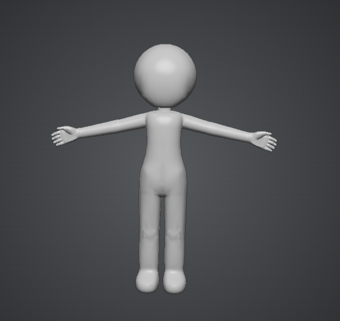

지금 확인한 것
- 기본 인체 모형의 작업 화면과 자세가 적용된 렌더 이미지가 공유되었습니다.
- 검정 실루엣에서는 인체의 외곽과 팔을 든 자세를 확인할 수 있습니다.
- 공유 화면에 표시된 작업 환경은 Blender 4.5.12 LTS · EEVEE입니다.
PROJECT PROGRESS / 03
다양한 형태에서 학습 자료를 준비합니다.
진행 중 · 기본 인체 모형과 렌더링 시험2026.11.12 업데이트 · 작가가 공유한 작업 화면과 출력 이미지, 직접 설명한 진행 상황을 기준으로 정리했습니다.
세부 작업을 눌러 내용을 펼쳐보세요. 진행 중인 작업은 펼쳐져 있습니다. 완료 표시는 해당 작업에만 적용됩니다.

작가는 8등신뿐 아니라 2등신·3등신으로도 바꾸기 쉽도록 인체를 단순하게 만들었습니다. 특정 비율 한 가지로 고정하기보다 여러 비율을 시험할 출발점으로 삼은 것입니다. 실제 변형의 안정성과 리깅 품질은 별도 검증 대상입니다.
다양한 인체 형태를 고민한 과정 보기 →기본 모형의 제작·선정을 마쳤다는 의미입니다. 등신 변형, 전체 포즈 검수와 학습 데이터 완성은 아직 진행 전입니다.
TRAINING DATA / CURRENT STATUS
단순한 인체 모형에서 실루엣 출력까지 진행했습니다. 이제 입체와 선이 분명하게 읽히도록 렌더 품질을 다듬는 단계입니다.
작가는 2등신·3등신·8등신 등 다양한 비율로 바꾸기 쉽도록 기본 인체 모형을 단순하게 구성했습니다. 이 비율들은 변형 목표이며, 모든 체형의 제작이나 자동 변형 검증이 끝났다는 뜻은 아닙니다.
여기서 말하는 출력은 Blender로 만든 학습용 이미지 후보입니다. 학습된 AI 모델의 생성 결과가 아닙니다. 실루엣 한 장의 확인만으로 전체 자세·시점이나 학습 데이터 품질 검수를 완료한 것으로 보지 않습니다. 문제의 원인과 수정 효과는 실제 파일·설정 및 재렌더링으로 확인해야 합니다.
실루엣, 무채색 입체, 카툰 명암, 외곽선은 재질·조명·선 표현 설정을 나누어 비교하는 방향입니다. 동일한 자세와 카메라를 유지해 표현 차이를 살펴봅니다.
인체 도형화, 중심선·관절선·동세 참고선은 별도 도형이나 기준점이 필요합니다. 메시와 리그 구조를 확인한 뒤 연결할 계획이며, 구현 완료로 표시하지 않습니다.
다음 순서는 검증 계획입니다. 카툰 전용 출력의 품질, 전체 동작·시점, JSON 연결 및 Tiny-UNet 입력 연결은 이번 공유 이미지로 확인되지 않았습니다.
렌더링 시험에서 드러난 문제와 선택 →AI로 다양한 체형 이미지를 만들고 3D 메시로 전환하는 경로와, 작가가 단순한 기본 인체를 구성해 변형·렌더링하는 작업을 함께 기록합니다. 초기 목표인 ‘트래툴 수준’의 형태 자료를 준비하며, 수정이 적게 필요한 완성도와 특정 체형·등신비·성별 표현에 치우치지 않는 다양성을 함께 살펴봅니다.
CharacterDeform_for_tripo3d.ipynb는 전면·측면·후면 이미지를 분리하는 데이터 제작 도구이며 모델 학습 코드는 아닙니다. 기존 렌더 스크립트 초안의 존재와 현재 실행 결과는 구분합니다.
빈 화면·채워진 색면·선에서 시작해 2차원 도형과 화면에 표현된 입체 도형으로 확장하려는 방향입니다. 구·원기둥처럼 2D로 표현한 입체 형태는 인체를 도형화해 그리는 과정으로 연결됩니다.
규칙 기반 도형 데이터로 먼저 작은 실험을 하고, 인체 모형의 수정·렌더링 시험은 별도로 이어갑니다. 두 경로를 모두 준비하되, 단계마다 학습 결과를 확인합니다.
2D 이미지 속 입체 표현을 배우는 것과 일관된 3D 구조를 이해하는 것은 같지 않습니다. 데이터 수량과 학습 해상도는 과거 문서의 수치를 자동으로 확정값으로 삼지 않습니다.
데이터 기준과 과거 가정 구분 →